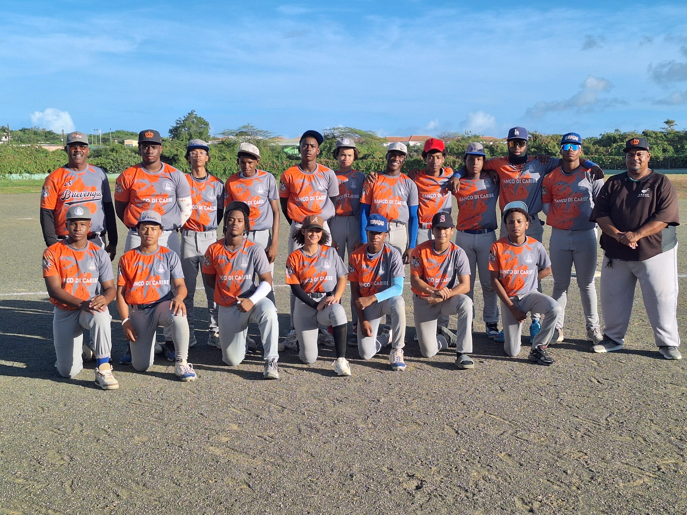

More about me
As you all already know, my name is Justice Vrutaal. Back in Curaçao, I used to play baseball in the team called Brievengat. We were the number 1 team in the country, I know, big flex! I also used to play football den bario (in our neighborhood). I miss my friends there, but I also like my new friends here: Hassie, Batu, Musti, and Niyorah. I also rap sometimes. I let Hassie listen to one of my songs; he doesn't understand what I say, but he says that my flow is hard. I also like his songs and hope we can collab one day. I spend most of my free time playing games and calling with my friends back home. Even though it ruins my sleep schedule because they're 5 hours behind us, I think it's worth it because I enjoy talking to them. If anyone has any questions, feel free to ask!
